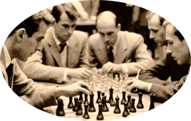

Чтобы поддержать
Международный васюкинский
турнир посетите лекцию на тему:
«Плодотворная дебютная идея»

и Сеанс
одновременной игры в шахматы на 160 досках
гроссмейстера О. Бендера
- Место проведения:
- Клуб «Картонажник»
- Дата и время мероприятия:
- 22 июня 1927 г. в 18:00
- Стоимость входных билетов:
- 20 коп.
- Плата за игру:
- 50 коп.
- Взнос на телеграммы:
- 100 руб. 21 руб. 16 коп.
Этапы преображения
Васюков
Будущие источники обогащения васюкинцев